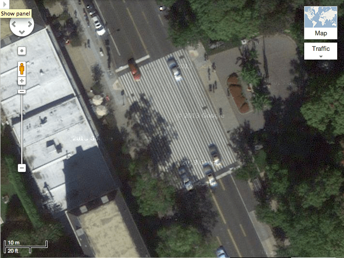
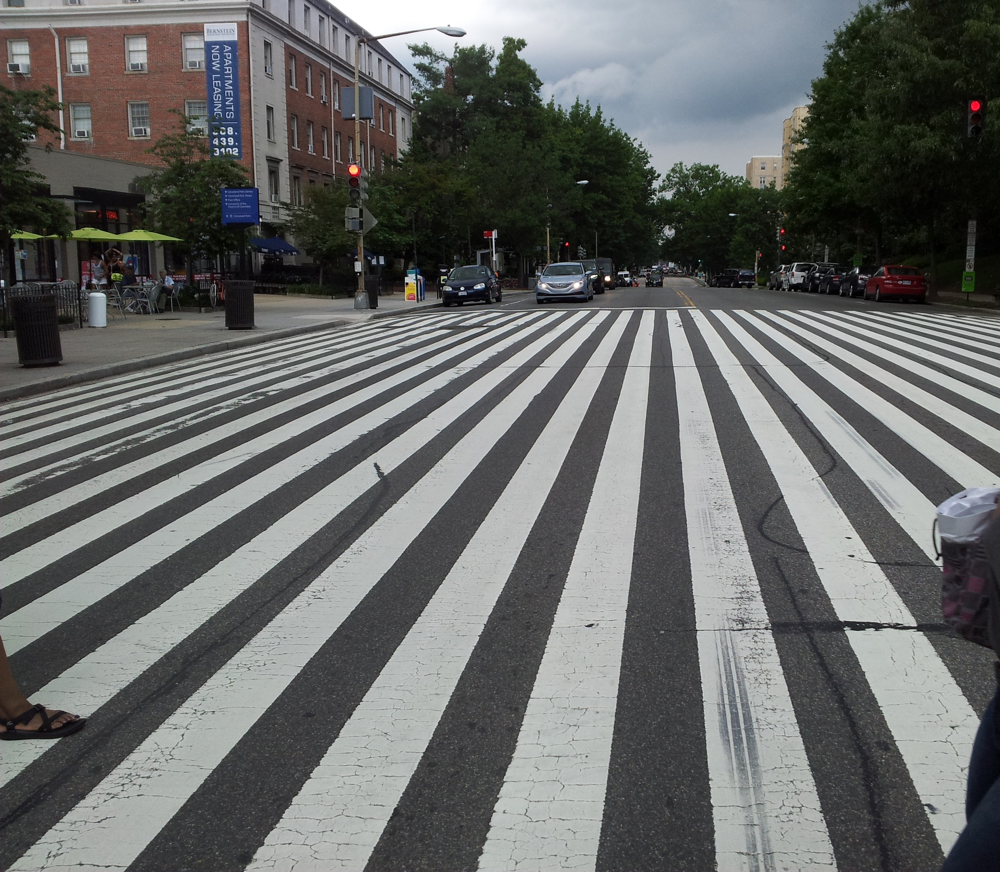
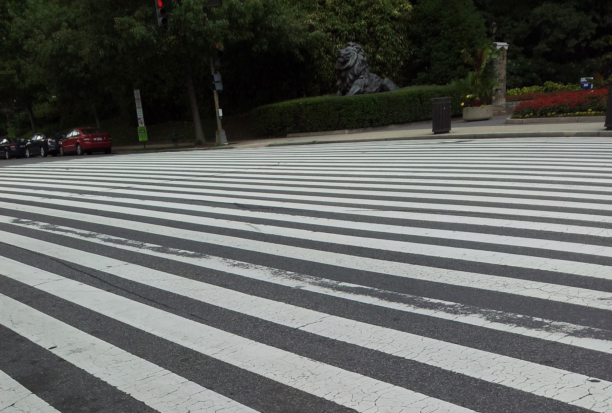
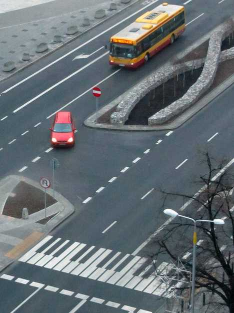

Zebra crossings are quite a crucial feature in the city landscape. They oblige (or well, remind) vehicles to stop and give pedestrians right of way. They are a relatively new invention, and they come in various shapes around the world. Their most important feature is of course visibility: above all they must be clearly visible.
In this department, nobody did a better job than the guys who painted the zebra crossing leading to the Washington D.C. Zoo. Roughly 30 metres long, yes: one really sees them.


It is important to stress that zebra crossings are a young design; as such, and as many other road signs, policies, and procedures regulating traffic and road sharing, they are quite likely far from being perfect. Designers are hence encouraged to rethink the crosswalk even if one should remain prudent when it comes to Creative Crosswalks.
